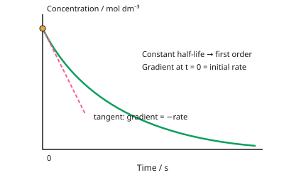

A-level Chemistry Year 13 · Topic 7
Year 13 required and core practicals
The Year 13 required and core practicals test the skills you need to measure, analyse and identify chemicals accurately.
We will measure rates by initial-rate and continuous methods, measure the EMF of cells, plot pH curves and make buffers.
Then we make and purify an organic solid like aspirin, separate mixtures by thin-layer chromatography, and identify functional groups with test-tube reactions.
- 6 subtopics
- 375 questions
- Free: 7.1 notes and 10 questions
In this topic
- 7.1Practical: measuring reaction rates by initial-rate and continuous-monitoring methods (including iodine–propanone and clock reactions)Free below · 78 questions
- 7.2Practical: measuring the EMF of electrochemical cells and testing electrode potential predictionsOpen in Full Marks · 32 questions
- 7.3Practical: pH curves, determining Ka of a weak acid and making and testing buffersOpen in Full Marks · 46 questions
- 7.4Practical: preparing a pure organic solid (e.g. aspirin), recrystallisation and melting-point purity testOpen in Full Marks · 82 questions
- 7.5Practical: separating mixtures by thin-layer chromatography and calculating Rf valuesOpen in Full Marks · 79 questions
- 7.6Practical: test-tube identification of organic functional groups (alkene, halogenoalkane, alcohol, carbonyl, carboxylic acid, phenol)Open in Full Marks · 58 questions
7.1 · Free notes
Practical: measuring reaction rates by initial-rate and continuous-monitoring methods (including iodine–propanone and clock reactions)

Key points
- Rate = change in concentration ÷ time, with units mol dm⁻³ s⁻¹. The rate equation (rate = k[A]^m[B]^n) can only be found by experiment, never from the balanced equation.
- Continuous monitoring: follow one property against time in a single run. Options are gas volume (gas syringe), colorimetry (absorbance), conductivity, mass loss, or quenching and titrating aliquots at intervals.
- On a concentration–time graph the gradient of a tangent gives the rate at that concentration. A constant half-life shows first order; a straight line of constant gradient shows zero order.
- Initial-rate method: run several experiments, changing one concentration at a time and keeping the others and the temperature constant. Use the initial rate so that reactant concentrations are still known and products or the reverse reaction have no effect.
- On a rate–concentration graph, a horizontal line means zero order, a straight line through the origin means first order, and a curve of increasing gradient means second order. Orders can also be found from ratios, e.g. doubling [A] gives ×4 rate for second order.
- Iodine–propanone: CH₃COCH₃ + I₂ → CH₃COCH₂I + HI, catalysed by H⁺. The rate equation is rate = k[CH₃COCH₃][H⁺], so the reaction is zero order in iodine, and [I₂] falls linearly.
- To follow iodine–propanone, withdraw aliquots at timed intervals and add them to sodium hydrogencarbonate, which neutralises the acid catalyst and quenches the reaction. Then titrate the I₂ with sodium thiosulfate using starch near the end-point (blue-black → colourless).
- Clock reaction (persulfate–iodide): S₂O₈²⁻ + 2I⁻ → 2SO₄²⁻ + I₂. A fixed small amount of thiosulfate (2S₂O₃²⁻ + I₂ → 2I⁻ + S₄O₆²⁻) with starch gives a sudden blue-black colour when it runs out. Because a fixed amount of I₂ forms in time t, the initial rate ∝ 1/t.
- Temperature: k = Ae^(−Ea/RT), so ln k = ln A − Ea/RT. A plot of ln k against 1/T has gradient −Ea/R, so Ea = −gradient × 8.31 J K⁻¹ mol⁻¹, which is then converted to kJ mol⁻¹.
- Good practice: use a thermostatted water bath, start the timer when the last reagent is added, and use measuring devices of suitable precision. Calculate % uncertainty = (absolute uncertainty ÷ measured value) × 100, and double the burette uncertainty for a titre (two readings).
- The units of k depend on overall order: zero = mol dm⁻³ s⁻¹, first = s⁻¹, second = dm³ mol⁻¹ s⁻¹. For first order, k = ln2 ÷ t½.
In more detail
- Iodine–propanone rate equation: rate = k[CH₃COCH₃][H⁺], zero order in I₂, so iodine is not involved in the rate-determining step.
- Quenching: adding the sample to sodium hydrogencarbonate neutralises the H⁺ catalyst, stopping the reaction so the iodine can be titrated with thiosulfate.
- Worked Ea: gradient of ln k vs 1/T = −6000 K → Ea = 6000 × 8.31 = 49 900 J mol⁻¹ ≈ 49.9 kJ mol⁻¹.
- Clock reactions give 1/t: the time for a fixed small amount of product to form is inversely proportional to the initial rate, as long as only a small proportion of reactant is used.
Practice
Practical: measuring reaction rates by initial-rate and continuous-monitoring methods (including iodine–propanone and clock reactions): 10 questions
Pick an answer to check it, or open the answer for the explanation.
1. In the acid-catalysed iodination of propanone, the rate is zero order with respect to iodine. What does a graph of [I₂] against time show?
- A straight line of constant negative gradient
- An exponential decay with constant half-life
- A horizontal line
- A curve with increasing half-lives
Show answer
A: A straight line of constant negative gradient. Zero order means the rate does not depend on [I₂], so the concentration falls at a constant rate, giving a straight line of constant negative gradient.
2. In the iodine–propanone experiment, why is each aliquot added to sodium hydrogencarbonate before titrating with thiosulfate?
- To neutralise the acid catalyst and stop the reaction
- To oxidise iodine to iodate
- To increase the rate of the reaction
- To act as the starch indicator
Show answer
A: To neutralise the acid catalyst and stop the reaction. Removing H⁺ with NaHCO₃ quenches the acid-catalysed reaction so the iodine concentration at that time is fixed during the titration.
3. The initial rate rises from 2.0×10⁻⁴ to 8.0×10⁻⁴ mol dm⁻³ s⁻¹ when [A] doubles from 0.10 to 0.20 mol dm⁻³, others constant. What is the order in A?
- Third
- Zero
- First
- Second
Show answer
D: Second. Doubling [A] multiplies the rate by 4 = 2², so the reaction is second order in A.
4. In a persulfate–iodide clock reaction, a fixed amount of thiosulfate and starch is added. Why is 1/t proportional to the initial rate?
- Thiosulfate catalyses the reaction
- A fixed amount of iodine forms before the colour appears, so rate ∝ 1/t
- Starch reacts with persulfate ions
- The blue-black colour appears at the start
Show answer
B: A fixed amount of iodine forms before the colour appears, so rate ∝ 1/t. The same small amount of I₂ is made (using up the thiosulfate) before the colour appears, so rate ≈ fixed amount ÷ t, i.e. proportional to 1/t.
5. [X] falls from 0.80 to 0.40 mol dm⁻³ in 120 s, then to 0.20 mol dm⁻³ in a further 120 s. What is the rate constant k?
- 8.3×10⁻³ s⁻¹
- 3.3×10⁻³ mol dm⁻³ s⁻¹
- 83 s⁻¹
- 5.8×10⁻³ s⁻¹
Show answer
D: 5.8×10⁻³ s⁻¹. Constant half-life of 120 s means first order. k = ln2 ÷ t½ = 0.693 ÷ 120 = 5.8×10⁻³ s⁻¹.
6. Clock times are 20 s with [I⁻] = 0.10 mol dm⁻³ and 40 s with [I⁻] = 0.05 mol dm⁻³, other concentrations constant. What is the order in I⁻?
- Zero
- Cannot be determined
- First
- Second
Show answer
C: First. Rate ∝ 1/t, so halving [I⁻] halves the rate (time doubles). Rate is proportional to [I⁻], so the reaction is first order.
7. A colorimeter is used to follow a reaction that forms a blue copper(II) complex. Which filter should be chosen?
- No filter
- Blue
- Violet
- Orange
Show answer
D: Orange. Choose a filter of the colour most strongly absorbed, which is complementary to the solution. A blue solution absorbs orange light most strongly.
8. Why are initial rates used when finding orders from a series of experiments?
- The rate is always greatest at the end
- The temperature rises during the reaction
- A catalyst forms as the reaction proceeds
- Concentrations are still known and products have not built up
Show answer
D: Concentrations are still known and products have not built up. At the start the reactant concentrations are known and there is no interference from products or the reverse reaction.
9. Which statement about rate equations is correct?
- The units of k are always s⁻¹
- Rate constants are independent of temperature
- Orders must be found by experiment, not from the balanced equation
- Orders equal the stoichiometric coefficients
Show answer
C: Orders must be found by experiment, not from the balanced equation. Orders are determined experimentally. k has units that depend on the overall order, and k increases with temperature.
10. A titre is the difference between two burette readings, each ±0.05 cm³. What is the % uncertainty in a titre of 12.50 cm³?
- 0.8%
- 8%
- 0.4%
- 0.1%
Show answer
A: 0.8%. Total uncertainty = 2 × 0.05 = 0.10 cm³. 0.10 ÷ 12.50 × 100 = 0.8%.
Keep going in Full Marks
Full Marks has 78 questions on Practical: measuring reaction rates by initial-rate and continuous-monitoring methods (including iodine–propanone and clock reactions) (68 more than here), set out in practice levels. You also get notes and 3D models for all 6 subtopics of Year 13 required and core practicals, plus games, timed exams and past papers.
On your exam board
- AQATopic 3.1.9: Rate equations, Topic 3.1.11: Electrode potentials and electrochemical cells, Topic 3.1.12: Acids and bases, Topic 3.3.14: Organic synthesis, Topic 3.3.16: Chromatography
- OCR ATopic 5.1.1: How fast?, Topic 5.1.3: Acids, bases and buffers, Topic 5.2.3: Redox and electrode potentials, Topic 6.2.5: Organic synthesis, Topic 6.3.1: Chromatography and qualitative analysis
- OCR BTopic CI: The chemical industry, Topic PL: Polymers and life, Topic O: Oceans, Topic DM: Developing metals, Topic CD: Colour by design
- EdexcelTopic 12: Acid-base equilibria, Topic 14: Redox II, Topic 16: Kinetics II, Topic 18: Organic chemistry III, Topic 19: Modern analytical techniques II
- CambridgeTopic 24: Electrochemistry, Topic 25: Equilibria, Topic 26: Reaction kinetics, Topic 37: Analytical techniques, Topic P: Planning, analysis and evaluation (Paper 5)